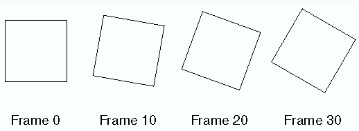
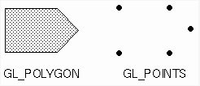
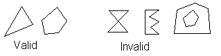

<!-- saved from url=(0057)http://www.rpi.edu/dept/ecse/cg-s00/Classes/22/index.html -->
<html>

<head>
<meta http-equiv="Content-Type"
content="text/html; charset=iso-8859-1">
<meta name="GENERATOR" content="Microsoft FrontPage Express 2.0">
<title>ECSE-4750, RPI, Class 23</title>
<!-- Time-stamp: </home/wrf/cg-f99/Classes/24/index.html, Wed,  3 Nov 1999, 19:15:00 EST, wrf@benvolio.ecse.rpi.edu> -->
<STYLE type="text/css">
</head>

<body bgcolor="#FFFFFF">

<h1 align="center">Rensselaer Polytechnic Institute<br>
ECSE-4750 Computer Graphics, Spring 2000<br>
Class 23</h1>

<hr>

<p>&nbsp;</p>

<h2><a name="What is OpenGL?">What is OpenGL?</a></h2>

<ul>
    <li>OpenGL is a software interface to 3D and 2D graphics
        routines. OpenGL can be used as an interface to graphics
        hardware or in some instances, be a software only
        solution. </li>
    <li>This interface consists of about 120 distinct commands,
        which you use to specify the objects and operations
        needed to produce interactive three-dimensional
        applications. </li>
    <li>OpenGL is designed to work efficiently even if the
        computer that displays the graphics you create isn't the
        computer that runs your graphics program. <ul>
            <li>This might be the case if you work in a networked
                computer environment where many computers are
                connected to one another by wires capable of
                carrying digital data. In this situation, the
                computer on which your program runs and issues
                OpenGL drawing commands is called the client, and
                the computer that receives those commands and
                performs the drawing is called the server. The
                format for transmitting OpenGL commands (called
                the protocol) from the client to the server is
                always the same, so OpenGL programs can work
                across a network even if the client and server
                are different kinds of computers. If an OpenGL
                program isn't running across a network, then
                there's only one computer, and it is both the
                client and the server. </li>
        </ul>
    </li>
    <li>OpenGL is designed as a streamlined, hardware-independent
        interface to be implemented on many different hardware
        platforms. <ul>
            <li>To achieve these qualities: </li>
            <li>No commands for performing windowing tasks or
                obtaining user input are included in OpenGL. </li>
            <li>You must work through whatever windowing system
                controls the particular hardware you're using. </li>
        </ul>
    </li>
</ul>

<ul>
    <li>With OpenGL, you must build up your desired model from a
        small set of geometric primitive points, lines, and
        polygons. (A sophisticated library that provides these
        features could certainly be built on top of OpenGL, we
        will investigate this in detail). </li>
</ul>

<h3>How does OpenGL work?</h3>

<ul>
    <li>Here is the order in which OpenGL performs the major
        graphics operations necessary to render an image on the
        screen. <ol>
            <li>Construct shapes from geometric primitives,
                thereby creating mathematical descriptions of
                objects. (OpenGL considers points, lines,
                polygons, images, and bitmaps to be primitives.) </li>
            <li>Arrange the objects in three-dimensional space
                and select the desired vantage point for viewing
                the composed scene. </li>
            <li>Calculate the color of all the objects. The color
                might be explicitly assigned by the application,
                determined from specified lighting conditions, or
                obtained by pasting a texture onto the objects. </li>
            <li>Convert the mathematical description of objects
                and their associated color information to pixels
                on the screen. This process is called
                rasterization. </li>
        </ol>
    </li>
    <li>During these stages, OpenGL might perform other
        operations, such as eliminating parts of objects that are
        hidden by other objects (the hidden parts won't be drawn,
        which might increase performance). In addition, after the
        scene is rasterized but just before it's drawn on the
        screen, you can manipulate the pixel data if you want. </li>
</ul>

<h3>Some basic terms<b>:</b></h3>

<dl>
    <dt>Rendering </dt>
    <dd>Conversion of primitives specified in object co-ordinates
        to an image in the framebuffer. Rendering is the primary
        operation of OpenGL, it's what OpenGL does. </dd>
</dl>

<dl>
    <dt>Bitplane </dt>
    <dd>A rectangular array of bits mapped one-to-one with pixels.
    </dd>
</dl>

<dl>
    <dt>Framebuffer </dt>
    <dd>All the buffers of a given window or context. Sometimes
        includes all the pixel memory of the graphics hardware
        accelerator. The framebuffer is also a stack of bitplanes.
    </dd>
</dl>

<h2><a name="A simple example:">A simple example:</a></h2>

<ul>
    <li>Because you can do so many things with the OpenGL
        graphics system, an OpenGL program can be complicated.
        However, the basic structure of a useful program can be
        simple: Its tasks are to initialise certain states that
        control how OpenGL renders and to specify objects to be
        rendered. </li>
    <li>Example 1-1 renders a white rectangle on a black
        background, as shown in Figure 1-1 . </li>
</ul>

<p><b><i>Example 1-1: A simple OpenGL Program.</i></b></p>

<blockquote>
    <pre><code>#include &lt;whateverYouNeed.h&gt; </code></pre>
    <pre><code>main() { </code></pre>
    <blockquote>
        <pre><code>OpenAWindowPlease(); 
glClearColor(0.0, 0.0, 0.0, 0.0);
glClear(GL_COLOR_BUFFER_BIT);
glColor3f(1.0, 1.0, 1.0);
glOrtho(-1.0, 1.0, -1.0, 1.0, -1.0, 1.0); 
glBegin(GL_POLYGON);
  glVertex2f(-0.5, -0.5);
  glVertex2f(-0.5, 0.5);
  glVertex2f(0.5, 0.5);
  glVertex2f(0.5, -0.5);
glEnd();
glFlush();

KeepTheWindowOnTheScreenForAWhile();</code></pre>
    </blockquote>
    <pre><code>}</code></pre>
</blockquote>

<ul>
    <li>The <i>OpenAWindowPlease()</i> routine is meant as a
        placeholder for a window system-specific routine. </li>
    <li>The next two lines are OpenGL commands that clear the
        window to black: <i>glClearColor()</i> establishes what
        color the window will be cleared to, and <i>glClear()</i>
        actually clears the window. Once the color to clear to is
        set, the window is cleared to that color whenever <i>glClear()</i>
        is called. </li>
    <li>The next OpenGL command used in the program, <i>glOrtho(),</i>
        specifies the co-ordinate system OpenGL assumes as it
        draws the final image and how the image gets mapped to
        the screen. </li>
    <li>The next calls, which are bracketed by <i>glBegin()</i>
        and <i>glEnd(),</i> define the object to be drawn in this
        example, a polygon with four vertices. </li>
    <li>The polygon's &quot;corners&quot; are defined by the <i>glVertex2f()</i>
        commands. As you might be able to guess from the
        arguments, which are (x, y) co-ordinate pairs, the
        polygon is a rectangle. </li>
    <li>Finally, <i>glFlush()</i> ensures that the drawing
        commands are actually executed, rather than stored in a
        buffer awaiting additional OpenGL commands. </li>
    <li>The <i>KeepTheWindowOnTheScreenForAWhile()</i>
        placeholder routine forces the picture to remain on the
        screen instead of immediately disappearing. </li>
</ul>

<p><b><i>Figure 1-1: Resultant image</i></b></p>

<p></p>

<ul>
    <li><font color="#0000A0"><strong><u>TODO</u></strong></font>:
        See the code from <a
        href="http://webct.rpi.edu:8900/web-ct/courses/356961/examples/Simple1.java"><font
        size="2" face="Courier New">Simple1.java</font></a> </li>
</ul>

<hr>

<h2><a name="OpenGL Command Syntax:">OpenGL Command Syntax:</a></h2>

<ul>
    <li>OpenGL commands use the prefix gl and initial capital
        letters for each word making up the command name (recall <i>glClearColor(),</i>
        for example). </li>
    <li>OpenGL defined constants begin with GL_, use all capital
        letters, and use underscores to separate words (like <code>GL_COLOR_BUFFER_BIT</code>).
    </li>
    <li>The seemingly extraneous letters appended to some command
        names (the <i>3f</i> in <i>glColor3f(),</i> for example)
        are necessary to allow the command to be used with
        various type of data values. </li>
    <li>The <i>3</i> part of the suffix indicates that three
        arguments are given; another version of the Color command
        takes four arguments. The <i>f</i> part of the suffix
        indicates that the arguments are floating-point numbers. </li>
    <li>Some OpenGL commands accept as many as eight different
        data types for their arguments. </li>
</ul>

<h2><a name="Command suffixes maping to ANSI C types:">Command
suffixes maping to ANSI C types:</a></h2>

<p><b><i>Table 1-1: Command Suffixes and Argument Data Types</i></b></p>

<table border="1">
    <tr>
        <td>Suffix</td>
        <td>Data Type</td>
        <td>C-Language Type</td>
        <td>OpenGL Type Definition</td>
    </tr>
    <tr>
        <td align="middle">b</td>
        <td>8-bit integer</td>
        <td>signed char</td>
        <td>GLbyte</td>
    </tr>
    <tr>
        <td align="middle">s</td>
        <td>16-bit integer</td>
        <td>short</td>
        <td>GLshort</td>
    </tr>
    <tr>
        <td align="middle">i</td>
        <td>32-bit integer</td>
        <td>long</td>
        <td>Glint, GLsizei</td>
    </tr>
    <tr>
        <td align="middle">f</td>
        <td>32-bit floating-point</td>
        <td>float</td>
        <td>Glfloat, GLclampf</td>
    </tr>
    <tr>
        <td align="middle">d</td>
        <td>64-bit floating-point</td>
        <td>double</td>
        <td>Gldouble, GLclampd</td>
    </tr>
    <tr>
        <td align="middle">ub</td>
        <td>8-bit unsigned integer</td>
        <td>unsigned char</td>
        <td>Glubyte, GLboolean</td>
    </tr>
    <tr>
        <td align="middle">us</td>
        <td>16-bit unsigned integer</td>
        <td>unsigned short</td>
        <td>GLushort</td>
    </tr>
    <tr>
        <td align="middle">ui</td>
        <td>32-bit unsigned integer</td>
        <td>unsigned long</td>
        <td>GLuint,GLenum, GLbitfield</td>
    </tr>
</table>

<ul>
    <li>Thus, the two commands: </li>
</ul>

<blockquote>
    <p><code>glVertex2i(1, 3);</code> <br>
    <code>glVertex2f(1.0, 3.0);</code> </p>
</blockquote>

<ul>
    <li>are equivalent, except that the first specifies the
        vertex's coordinates as 32-bit integers and the second
        specifies them as single-precision floating-point numbers.
    </li>
    <li>Some OpenGL commands can take a final letter v, which
        indicates that the command takes a pointer to a vector (or
        array) of values rather than a series of individual
        arguments: </li>
</ul>

<blockquote>
    <p><code>glColor3f(1.0, 0.0, 0.0); <br>
    float color_array[] = {1.0, 0.0,0.0};</code> <br>
    <code>glColor3fv(color_array);</code> </p>
</blockquote>

<ul>
    <li>The particular implementation of OpenGL that you're using
        might not follow this scheme exactly; an implementation
        in C++, Java, or Ada, for example, wouldn't need to. </li>
</ul>

<table border="1">
    <tr>
        <td align="middle">?</td>
        <td>How would C++, Java, or Ada remove these extra
        routine definitions?</td>
    </tr>
</table>

<hr>

<h2><a name="OpenGL as a State Machine">OpenGL as a State Machine</a></h2>

<ul>
    <li>OpenGL is a state machine. You put it into various states
        (or modes) that then remain in effect until you change
        them. </li>
    <li>The current color is a state variable. You can set the
        current color to white, red, or any other color, and
        thereafter every object is drawn with that color until
        you set the current color to something else. </li>
    <li>The current color is only one of many state variables
        that OpenGL preserves. Others control such things as the
        current viewing and projection transformations, line and
        polygon stipple patterns, polygon drawing modes, pixel-packing
        conventions, positions and characteristics of lights, and
        material properties of the objects being drawn. </li>
    <li>Many state variables refer to modes that are enabled or
        disabled with the command <i>glEnable()</i> or <i>glDisable().</i>
    </li>
    <li>Each state variable or mode has a default value, and at
        any point you can query the system for each variable's
        current value using one of the four following commands: </li>
</ul>

<blockquote>
    <p><i>glGetBooleanv(), glGetDoublev(), glGetFloatv(),</i> or <i>glGetIntegerv()</i>
    </p>
</blockquote>

<ul>
    <li>Which of these commands you select depends on what data
        type you want the answer to be given in. Some state
        variables have a more specific query command (such as <i>glGetLight*(),
        glGetError(),</i> or <i>glGetPolygonStipple()</i> ). </li>
    <li>In addition, you can save and later restore the values of
        a collection of state variables on an attribute stack
        with the <i>glPushAttrib()</i> and <i>glPopAttrib()</i>
        commands. Whenever possible, you should use these
        commands rather than any of the query commands, since
        they're likely to be more efficient. </li>
    <li>Refer to this site for more information:<br>
        <a
        href="javascript:doWindowOpen('http://www.hp.com/unixwork/products/grfx/OpenGL/Web/Reference/glEnable.html','new_frame','width=600,height=420,menubar=1,toolbar=1,scrollbars=1,status=1,location=1,resizable=1,resizable=1',0)">http://www.hp.com/unixwork/products/grfx/OpenGL/Web/Reference/glEnable.html</a>
    </li>
</ul>

<table border="1">
    <tr>
        <td align="middle">?</td>
        <td>Why would this be more efficient?</td>
    </tr>
</table>

<hr>

<h2><a name="The OpenGL Programming Guide Auxiliary Library">The
OpenGL Programming Guide Auxiliary Library</a></h2>

<ul>
    <li>OpenGL contains rendering commands but is designed to be
        independent of any window system or operating system.
        Consequently, it contains no commands for opening windows
        or reading events from the keyboard or mouse. </li>
    <li>The auxiliary library is intentionally simple, and it
        would be difficult to build a large application on top of
        it. It's intended solely to support the examples in the
        &quot;OpenGL Programming Guide&quot;, but you may find it
        a useful starting point to begin building real
        applications. </li>
</ul>

<h3><a name="Window Management">Window Management</a></h3>

<ul>
    <li>Three routines perform tasks necessary to initialise and
        open a window <ul>
            <li><i>auxInitWindow()</i> opens a window on the
                screen. It enables the Escape key to be used to
                exit the program, and it sets the background
                color for the window to black. </li>
            <li><i>auxInitPosition()</i> tells <i>auxInitWindow()</i>
                where to position a window on the screen. </li>
            <li><i>auxInitDisplayMode()</i> tells <i>auxInitWindow()</i>
                whether to create an RGBA or color-index window.
                You can also specify a single- or double-buffered
                window. (If you're working in color-index mode,
                you'll want to load certain colors into the color
                map; use <i>auxSetOneColor()</i> to do this.)
                Finally, you can use this routine to indicate
                that you want the window to have an associated
                depth, stencil, and/or accumulation buffer. </li>
        </ul>
    </li>
</ul>

<h3><a name="Handling Input Events">Handling Input Events</a></h3>

<ul>
    <li>You can use these routines to register callback commands
        that are invoked when specified events occur. <ul>
            <li><i>auxReshapeFunc()</i> indicates what action
                should be taken when the window is resized,
                moved, or exposed. </li>
            <li><i>auxKeyFunc()</i> and <i>auxMouseFunc()</i>
                allow you to link a keyboard key or a mouse
                button with a routine that's invoked when the key
                or mouse button is pressed or released. </li>
        </ul>
    </li>
</ul>

<h3><a name="Drawing 3-D Objects">Drawing 3-D Objects</a></h3>

<ul>
    <li>The auxiliary library includes several routines for
        drawing these three-dimensional objects: <ul>
            <li>sphere, octahedron, cube, dodecahedron, torus,
                icosahedron, cylinder, teapot, cone </li>
        </ul>
    </li>
    <li>You can draw these objects as wireframes or as solid
        shaded objects with surface normals defined. For example,
        the routines for a sphere and a torus are as follows: </li>
</ul>

<blockquote>
    <p><i>void auxWireSphere(GLdouble radius); <br>
    void auxSolidSphere(GLdouble radius);</i> <br>
    <i>void auxWireTorus(GLdouble innerRadius, GLdouble
    outerRadius);</i> <br>
    <i>void auxSolidTorus(GLdouble innerRadius, GLdouble
    outerRadius);</i> </p>
</blockquote>

<ul>
    <li>All these models are drawn centered at the origin. When
        drawn with unit scale factors, these models fit into a
        box with all coordinates from -1 to 1. Use the arguments
        for these routines to scale the objects. </li>
</ul>

<h3><a name="Managing a Background Process">Managing a Background
Process</a></h3>

<ul>
    <li>You can specify a function that's to be executed if no
        other events are pending for example, when the event loop
        would otherwise be idle with <i>auxIdleFunc().</i> This
        routine takes a pointer to the function as its only
        argument. Pass in zero to disable the execution of the
        function. </li>
</ul>

<h3><a name="Running the Program">Running the Program</a></h3>

<ul>
    <li>Within your <i>main()</i> routine, call <i>auxMainLoop()</i>
        and pass it the name of the routine that redraws the
        objects in your scene. Example 1-2 shows how you might
        use the auxiliary library to create the simple program
        shown in Example 1-1 . </li>
</ul>

<p><b><i>Example 1-2: A Simple OpenGL Program Using the Auxiliary
Library: simple.c</i></b></p>

<blockquote>
    <pre><code>/* Includes required */</code> </pre>
    <pre><code>#include &lt;GL/gl.h&gt; 
#include &quot;aux.h&quot; </code></pre>
    <pre>/*
* Clear the screen. Set the current color to white. 
* Draw the wire frame cube. 
*<code>/ </code></pre>
    <pre><code>void display(void)</code> 
<code>{</code> </pre>
</blockquote>

<blockquote>
    <blockquote>
        <pre><code>glClearColor (0.0, 0.0, 0.0, 0.0);</code> 
<code>glClear(GL_COLOR_BUFFER_BIT);
glColor3f(1.0, 1.0, 1.0);</code> <code>
glOrtho(-1.0, 1.0, -1.0, 1.0, -1.0, 1.0);</code> <code>
glBegin(GL_POLYGON);</code> <code>
  glVertex2f(-0.5, -0.5);
  glVertex2f(-0.5, 0.5);</code> <code>
  glVertex2f(0.5, 0.5);</code> <code>
  glVertex2f(0.5, -0.5);</code> <code>
glEnd();</code> <code>
glFlush(); </code></pre>
    </blockquote>
</blockquote>

<blockquote>
    <pre><code>}</code> </pre>
</blockquote>

<blockquote>
    <pre><code>/* Initialize shading model */
void myInit(void)</code> 
{</pre>
    <blockquote>
        <pre>glShadeModel (GL_FLAT); </pre>
    </blockquote>
    <pre><code>} </code></pre>
</blockquote>

<blockquote>
    <pre>/* 
* Called when the window is first opened and whenever 
* the window is reconfigured (moved or resized). 
*<code>/ </code></pre>
</blockquote>

<blockquote>
    <pre><code>void myReshape(GLsizei w, GLsizei h)</code> <code>
{</code> </pre>
</blockquote>

<blockquote>
    <blockquote>
        <pre><code>glMatrixMode(GL_PROJECTION);
glLoadIdentity();</code> 
glFrustum (-1.0, 1.0, -1.0, 1.0, 1.5, 20.0); /* transformation */ 
glMatrixMode (GL_MODELVIEW); /* back to modelview matrix */ 
glViewport (0, 0, w, h); /* define the viewport */ </pre>
    </blockquote>
    <pre>} </pre>
</blockquote>

<blockquote>
    <pre>/* 
* Main Loop 
* Open window with initial window size, title bar, 
* RGBA display mode, and handle input events. 
*<code>/ </code></pre>
</blockquote>

<blockquote>
    <pre><code>int main(int argc, char** argv) 
{</code> </pre>
</blockquote>

<blockquote>
    <blockquote>
        <pre><code>auxInitDisplayMode (AUX_SINGLE | AUX_RGBA);</code> <code>
auxInitPosition (0, 0, 500, 500);</code> <code>
auxInitWindow (argv[0]);</code> 
myInit (); 
auxReshapeFunc (myReshape); 
auxMainLoop(display)<code>; </code></pre>
    </blockquote>
</blockquote>

<blockquote>
    <pre><code>}</code> </pre>
</blockquote>

<hr>

<h2><a name="Compilling on RCS">Compilling on RCS</a></h2>

<ul>
    <li>There is an example Makefile in the VisClass/apps
        directory which can be used as a template for future
        assignments. </li>
</ul>

<p><b><i>Example 1-3: Example Makefile for simple.c</i></b></p>

<dl>
    <dd><pre><code>#</code> 
<code># Sample Makefile for compilling the sample code for the</code> 
<code># Advanced Computer Graphics and Data Visualization 35.6961 (Fall 1995)</code> 
<code>#</code> 
<code># Copy this to the directory where the program resides and use</code> 
<code># 
# make progname</code> 
<code>#</code> 
<code># The progname would be the prefix of the source file you generated.</code> 
<code># Like if your source file was hw1.c, the above line would read:</code> 
<code>#</code> 
<code># make hw1</code> 
<code>#</code> 
<code># The make utility would automatically look for something with a suffix</code> 
<code># it understood and would find hw1.c. There are built in rules which</code> 
<code># tell it how to compile c source. </code></pre>
    </dd>
</dl>

<blockquote>
    <pre><code>LIBS= -lGL -lGLU -laux -lXm -lXt -lX11 -lm</code> 
<code>CFLAGS=-DAIXV3 -I/usr/include/GL</code> <code>
CC=cc </code></pre>
</blockquote>

<blockquote>
    <pre><code>simple: simple.o</code> <code>
	$(CC) $(CFLAGS) -o $@ $? $(LIBS) </code></pre>
</blockquote>

<blockquote>
    <pre><code>lorenz: lorenz.o</code> <code>
	 $(CC) $(CFLAGS) -o $@ $? $(LIBS) </code></pre>
</blockquote>

<blockquote>
    <pre><code>clean:</code> <code>
	/bin/rm -f *.o</code> </pre>
</blockquote>

<p><b><i>Example 1-4: Results of the build process.</i></b></p>

<blockquote>
    <pre><code>% make simple
cc -DAIXV3 -I/usr/include/GL -c simple.c</code> <code>
cc -DAIXV3 -I/usr/include/GL -o simple simple.o -lGL -lGLU -laux -lXm -lXt -lX11 -lm</code> <code>
%</code> </pre>
</blockquote>

<ul>
    <li>Obviously there should be no warning or error messages as
        a result of the build. </li>
</ul>

<p><em><strong>Example of a Java compile.</strong></em></p>

<blockquote>
    <pre>% javac Simple.java
% java Simple</pre>
</blockquote>

<ul>
    <li>The CLASSPATH variable should be set to the directory
        where the Jogl class jar file exists and the path or
        library path variable should point to the Jogl dynamic
        library is located. </li>
</ul>

<hr>

<h2><a name="Animation">Animation</a></h2>

<ul>
    <li>One of the most exciting things you can do on a graphics
        computer is draw pictures that move. Whether you're an
        engineer trying to see all sides of a mechanical part
        you're designing, a pilot learning to fly an airplane
        using a simulation, or merely a computer-game aficionado,
        it's clear that animation is an important part of
        computer graphics. </li>
    <li>In a movie theater, motion is achieved by taking a
        sequence of pictures (24 per second), and then projecting
        them at 24 per second on the screen. (The old Charlie
        Chaplin movies were shot at 16 frames per second and are
        noticeably jerky.) </li>
    <li>Computer-graphics screens typically refresh (redraw the
        picture) approximately 60 to 76 times per second, and
        some even run at about 120 refreshes per second. Clearly,
        60 per second is smoother than 30, and 120 is marginally
        better than 60. Refresh rates faster than 120, however,
        are beyond the point of diminishing returns, since the
        human eye is only so good. </li>
    <li>The key idea that makes motion picture projection work is
        that when it is displayed, each frame is complete. </li>
    <li>What is the problem with this following code segment
        which attempts to animate a scene: </li>
</ul>

<blockquote>
    <pre><code>open_window(); </code></pre>
    <pre><code>for (i = 0; i &lt; 1000000; i++) {
   clear_the_window(); 
   draw_frame(i); 
   wait_until_a_24th_of_a_second_is_over(); 
}</code> </pre>
</blockquote>

<table border="1">
    <tr>
        <td align="middle">?</td>
        <td>What is the problem with this algorithm?</td>
    </tr>
</table>

<ul>
    <li>A modified version of the preceding program that does
        display smoothly animated graphics might look like this: </li>
</ul>

<blockquote>
    <pre><code>open_window_in_double_buffer_mode(); </code></pre>
</blockquote>

<blockquote>
    <pre><code>for (i = 0; i &lt; 1000000; i++) { 
   clear_the_window(); 
   draw_frame(i);
   swap_the_buffers(); </code>
} </pre>
</blockquote>

<table border="1">
    <tr>
        <td align="middle">?</td>
        <td>How does this remove the problem of the last
        algorithm?</td>
    </tr>
</table>

<ul>
    <li>OpenGL doesn't have a swap_the_buffers() command because
        the feature might not be available on all hardware and,
        in any case, it's highly dependent on the window system.
        However, GLX provides such a command, for use on machines
        that use the X Window System. </li>
</ul>

<p><b><i>Example 1-3: A Double-Buffered Program: double.c</i></b></p>

<blockquote>
    <pre><code>#include &lt;GL/gl.h&gt;</code> <code>
#include &lt;GL/glu.h&gt;</code> <code>
#include &lt;GL/glx.h&gt;</code> <code>
#include &quot;aux.h&quot; </code></pre>
</blockquote>

<blockquote>
    <pre><code>static GLfloat spin = 0.0; </code></pre>
</blockquote>

<blockquote>
    <pre><code>void display(void)</code> <code>
{</code> </pre>
</blockquote>

<blockquote>
    <blockquote>
        <pre><code>glClear(GL_COLOR_BUFFER_BIT);
glPushMatrix();</code> <code>
glRotatef(spin, 0.0, 0.0, 1.0);</code> <code>
glRectf(-25.0, -25.0, 25.0, 25.0);
glPopMatrix(); 
glFlush();</code> <code>
glXSwapBuffers(auxXDisplay(), auxXWindow());</code> </pre>
    </blockquote>
</blockquote>

<blockquote>
    <pre><code>}</code> </pre>
</blockquote>

<blockquote>
    <pre><code>void spinDisplay(void) 
{</code> </pre>
</blockquote>

<blockquote>
    <blockquote>
        <pre><code>spin = spin + 2.0;</code> <code>
if (spin &gt; 360.0)</code> <code>
   spin = spin - 360.0;</code> <code>
display();</code> </pre>
    </blockquote>
</blockquote>

<blockquote>
    <pre><code>} </code></pre>
</blockquote>

<blockquote>
    <pre><code>void startIdleFunc(AUX_EVENTREC *event)</code> 
<code>{</code> </pre>
</blockquote>

<blockquote>
    <blockquote>
        <pre><code>auxIdleFunc(spinDisplay);</code> </pre>
    </blockquote>
</blockquote>

<blockquote>
    <pre><code>} </code></pre>
</blockquote>

<blockquote>
    <pre><code>void stopIdleFunc(AUX_EVENTREC *event)</code> <code>
{</code> </pre>
</blockquote>

<blockquote>
    <blockquote>
        <pre><code>auxIdleFunc(0);</code> </pre>
    </blockquote>
</blockquote>

<blockquote>
    <pre><code>} </code></pre>
</blockquote>

<blockquote>
    <pre><code>void myinit(void)</code>
<code>{</code> </pre>
</blockquote>

<blockquote>
    <blockquote>
        <pre><code>glClearColor(0.0, 0.0, 0.0, 1.0);</code> <code>
glColor3f(1.0, 1.0, 1.0);</code> <code>
glShadeModel(GL_FLAT);</code> </pre>
    </blockquote>
</blockquote>

<blockquote>
    <pre><code>} </code></pre>
</blockquote>

<blockquote>
    <pre><code>void myReshape(GLsizei w, GLsizei h) 
{</code> </pre>
</blockquote>

<blockquote>
    <blockquote>
        <pre><code>glViewport(0, 0, w, h);</code> <code>
glMatrixMode(GL_PROJECTION);</code> <code>
glLoadIdentity();</code> <code>
if (w &lt;= h) 
   glOrtho (-50.0, 50.0, -50.0*(GLfloat)h/(GLfloat)w, 	
	     50.0*(GLfloat)h/(GLfloat)w, -1.0, 1.0);</code> <code>
else 
   glOrtho (-50.0*(GLfloat)w/(GLfloat)h, 
	     50.0*(GLfloat)w/(GLfloat)h, -50.0, 50.0, -1.0, 1.0);</code> <code>
glMatrixMode(GL_MODELVIEW);</code> <code>
glLoadIdentity ();</code> </pre>
    </blockquote>
</blockquote>

<blockquote>
    <pre><code>} </code></pre>
</blockquote>

<blockquote>
    <pre><code>int main(int argc, char** argv)
{</code> </pre>
</blockquote>

<blockquote>
    <blockquote>
        <pre><code>auxInitDisplayMode(AUX_DOUBLE | AUX_RGBA);
auxInitPosition(0, 0, 500, 500);</code> <code>
auxInitWindow(argv[0]);</code> <code>
myinit();</code> <code>
auxReshapeFunc(myReshape);</code> <code>
auxIdleFunc(spinDisplay);</code> <code>
auxMouseFunc(AUX_LEFTBUTTON, AUX_MOUSEDOWN, startIdleFunc);</code> <code>
auxMouseFunc(AUX_MIDDLEBUTTON, AUX_MOUSEDOWN, stopIdleFunc);</code> <code>
auxMainLoop(display);</code> </pre>
    </blockquote>
</blockquote>

<blockquote>
    <pre><code>}</code> </pre>
</blockquote>

<ul>
    <li><font color="#0000A0"><strong><u>TODO</u></strong></font>:
        See the example <a
        href="javascript:doWindowOpen('/356961/examples\Animate.java','new_frame','width=600,height=420,menubar=1,toolbar=1,scrollbars=1,status=1,location=1,resizable=1,resizable=1',0)">Animate.java</a>
    </li>
</ul>

<p><b><i>Figure 1-2: A Double-Buffered Program Results</i></b></p>

<p></p>

<hr>

<hr align="left" width="75%">

<h2><a name="Drawing Geometric Objects">Drawing Geometric Objects</a></h2>

<ul>
    <li>At the highest level of abstraction, there are three
        basic drawing operations: clearing the window, drawing a
        geometric object, and drawing a raster object. </li>
    <li>All the curved lines and surfaces you've seen are
        approximated by large numbers of little flat polygons or
        straight lines </li>
    <li>OpenGL's default style of drawing graphics is immediate-mode.
        This specifies that OpenGL will draw the object when you
        issue the command. The other mode is display list drawing
        which store the drawing commands for later usage. Display
        lists are more efficient and we will look at those later.
    </li>
</ul>

<h3><a name="Clearing the Window">Clearing the Window</a></h3>

<ul>
    <li>Drawing on a computer screen is different from drawing on
        paper in that the paper starts out white, and all you
        have to do is draw the picture. On a computer, the memory
        holding the picture is usually filled with the last
        picture you drew, so you typically need to clear it to
        some background color before you start to draw the new
        scene. </li>
    <li>This is how to clear the window to black:<code> </code></li>
</ul>

<blockquote>
    <p><code>glClearColor(0.0, 0.0, 0.0, 0.0); <br>
    glClear(GL_COLOR_BUFFER_BIT);</code> </p>
</blockquote>

<ul>
    <li>The first line sets the clearing color to black, and the
        next command clears the entire window to the current
        clearing color. The single parameter to <i>glClear()</i>
        indicates which buffers are to be cleared. In this case,
        the program clears only the color buffer, where the image
        displayed on the screen is kept. </li>
    <li>Typically, you set the clearing color once, early in your
        application, and then you clear the buffers as often as
        necessary. OpenGL keeps track of the current clearing
        color as a state variable rather than requiring you to
        specify it each time a buffer is cleared. </li>
</ul>

<h3><a name="Specifying a Color">Specifying a Color</a></h3>

<ul>
    <li>With OpenGL, the description of the shape of an object
        being drawn is independent of the description of its
        color. Whenever a particular geometric object is drawn,
        it's drawn using the currently specified coloring scheme.
    </li>
    <li>Until the color or coloring scheme is changed, all
        objects are drawn in that color or using that coloring
        scheme. This method helps OpenGL achieve higher drawing
        performance than would result if it didn't keep track of
        the current color. </li>
    <li>For example, the pseudocode </li>
</ul>

<blockquote>
    <p><code>set_current_color(red);<br>
    draw_object(A); <br>
    draw_object(B); <br>
    set_current_color(green); <br>
    set_current_color(blue);<br>
    draw_object(C);</code> </p>
</blockquote>

<ul>
    <li>draws objects A and B in red, and object C in blue. The
        command on the fourth line that sets the current color to
        green is wasted. </li>
    <li>To set a color, use the command <i>glColor3f().</i> It
        takes three parameters, all of which are floating-point
        numbers between 0.0 and 1.0. The parameters are, in
        order, the red, green, and blue components of the color. </li>
    <li><font color="#0000A0"><strong><u>TODO</u></strong></font>:
        Try modifying <a
        href="http://webct.rpi.edu:8900/web-ct/courses/356961/examples/Simple1.java"><font
        size="2" face="Courier New">Simple1.java</font></a> to
        show different colors on the polygon. </li>
</ul>

<p><b><i>Table 1-2: Color mappings to RGB values</i></b></p>

<table border="1">
    <tr>
        <td>Command</td>
        <td>Color</td>
    </tr>
    <tr>
        <td>glColor3f(0.0, 0.0, 0.0);</td>
        <td>black</td>
    </tr>
    <tr>
        <td>glColor3f(1.0, 0.0, 0.0);</td>
        <td>red</td>
    </tr>
    <tr>
        <td>glColor3f(0.0, 1.0, 0.0);</td>
        <td>green</td>
    </tr>
    <tr>
        <td>glColor3f(1.0, 1.0, 0.0);</td>
        <td>yellow</td>
    </tr>
    <tr>
        <td>glColor3f(0.0, 0.0, 1.0);</td>
        <td>blue</td>
    </tr>
    <tr>
        <td>glColor3f(1.0, 0.0, 1.0);</td>
        <td>magenta</td>
    </tr>
    <tr>
        <td>glColor3f(0.0, 1.0, 1.0);</td>
        <td>cyan</td>
    </tr>
    <tr>
        <td>glColor3f(1.0, 1.0, 1.0);</td>
        <td>white</td>
    </tr>
</table>

<h3><a name="Forcing Completion of Drawing">Forcing Completion of
Drawing</a></h3>

<ul>
    <li>Most modern graphics systems can be thought of as an
        assembly line, sometimes called a graphics pipeline. The
        main central processing unit (CPU) issues a drawing
        command, perhaps other hardware does geometric
        transformations, clipping occurs, then shading or
        texturing is performed, and finally, the values are
        written into the bitplanes for display </li>
    <li>The client server model of OpenGL uses packets of drawing
        commands as the method of communication. These packets
        hold a number of drawing commands and the client will
        wait for the packet to be filled before sending it to the
        server. This can result in a few drawing commands getting
        &quot;stuck&quot; in the transmission packet on the
        client. </li>
    <li>For this reason, OpenGL provides the command <i>glFlush(),</i>
        which forces the client to send the network packet even
        though it might not be full. Where there is no network
        and all commands are truly executed immediately on the
        server, <i>glFlush()</i> might have no effect. However,
        if you're writing a program that you want to work
        properly both with and without a network, include a call
        to <i>glFlush()</i> at the end of each frame or scene. </li>
</ul>

<hr>

<hr align="left" width="75%">

<h2><a name="Drawing Graphic Primitives">Drawing Graphic
Primitives</a></h2>

<dl>
    <dt><b>Points</b> </dt>
    <dd>A point is represented by a set of floating-point numbers
        called a vertex. All internal calculations are done as if
        vertices are three-dimensional. Vertices specified by the
        user as two-dimensional (that is, with only x and y
        coordinates) are assigned a z co-ordinate equal to zero
        by OpenGL </dd>
    <dt><b>Lines</b> </dt>
    <dd>In OpenGL, line means line segment, not the
        mathematician's version that extends to infinity in both
        directions. There are easy ways to specify a connected
        series of line segments, or even a closed, connected
        series of segments. In all cases, though, the lines
        comprising the connected series are specified in terms of
        the vertices at their endpoints. </dd>
    <dt><b>Polygons</b> </dt>
    <dd>Polygons are the areas enclosed by single closed loops of
        line segments, where the line segments are specified by
        the vertices at their endpoints. Polygons are typically
        drawn with the pixels in the interior filled in, but you
        can also draw them as outlines or a set of points </dd>
    <dt><b>Rectangles</b> </dt>
    <dd>Since rectangles are so common in graphics applications,
        OpenGL provides a filled-rectangle drawing primitive, <i>glRect*().</i>
        You can draw a rectangle as a but your particular
        implementation of OpenGL might have optimized <i>glRect*()</i>
        for rectangles. </dd>
</dl>

<ul>
    <li>How to draw an OpenGL Primitive, the following code
        specifies the vertices for a polygon show in figure 3:<code>
        </code></li>
</ul>

<blockquote>
    <pre><code>glBegin(GL_POLYGON);</code> <code>
  glVertex2f(0.0, 0.0);</code> <code>
  glVertex2f(0.0, 3.0);</code> <code>
  glVertex2f(3.0, 3.0);</code> <code>
  glVertex2f(4.0, 1.5);</code> <code>
  glVertex2f(3.0, 0.0);</code> <code>
glEnd();</code> </pre>
</blockquote>

<p><b><i>Figure 1-3: Drawing a Polygon or Set of Points</i></b></p>

<p></p>

<ul>
    <li>If you had used GL_POINTS instead of GL_POLYGON, the
        primitive would have been simply the five points shown in
        Figure 2 . Table 1-2 in the following function summary
        for <i>glBegin()</i> lists the ten possible arguments and
        the corresponding type of primitive. </li>
</ul>

<dl>
    <dt><i>void glBegin(GLenum mode);</i> </dt>
    <dd>Marks the beginning of a vertex list that describes a
        geometric primitive. The type of primitive is indicated
        by mode, which can be any of the values shown in </dd>
</dl>

<ul>
    <li><font color="#0000A0"><strong><u>TODO</u></strong></font>:
        Try modifying the code in <a
        href="javascript:doWindowOpen('/356961/examples/Primitives.java','new_frame','width=600,height=420,menubar=1,toolbar=1,scrollbars=1,status=1,location=1,resizable=1,resizable=1',0)">Primitives.java</a>
        to draw other basic OpenGL types. </li>
</ul>

<p><b><i>Table 1-3: Geometric Primitive Names and Meanings</i></b></p>

<table border="1">
    <tr>
        <td>Value</td>
        <td>Meaning</td>
    </tr>
    <tr>
        <td>GL_POINTS </td>
        <td>individual points</td>
    </tr>
    <tr>
        <td>GL_LINES </td>
        <td>pairs of vertices interpreted as individual line
        segments</td>
    </tr>
    <tr>
        <td>GL_POLYGON </td>
        <td>boundary of a simple, convex polygon</td>
    </tr>
    <tr>
        <td>GL_TRIANGLES </td>
        <td>triples of vertices interpreted as triangles</td>
    </tr>
    <tr>
        <td>GL_QUADS </td>
        <td>quadruples of vertices interpreted as four-sided
        polygons</td>
    </tr>
    <tr>
        <td>GL_LINE_STRIP </td>
        <td>series of connected line segments</td>
    </tr>
    <tr>
        <td>GL_LINE_LOOP </td>
        <td>same as above, with a segment added between last and
        first vertices</td>
    </tr>
    <tr>
        <td>GL_TRIANGLE_STRIP </td>
        <td>linked strip of triangles</td>
    </tr>
    <tr>
        <td>GL_TRIANGLE_FAN </td>
        <td>linked fan of triangles</td>
    </tr>
    <tr>
        <td>GL_QUAD_STRIP </td>
        <td>linked strip of quadrilaterals</td>
    </tr>
</table>

<h3><a name="Restriction on using glBegin() and glEnd()">Restriction
on using glBegin() and glEnd()</a></h3>

<ul>
    <li>The most important aspect of vertices are their
        coordinates, which are specified by the <i>glVertex()</i>
        command. You can also supply additional vertex specific
        information for each vertex - a color, a normal vector,
        texture coordinates, or any combination of the following
        commands: </li>
</ul>

<p><b><i>Table 1-4: Valid commands between glBegin() and glEnd()</i></b></p>

<table border="1">
    <tr>
        <td>Command</td>
        <td>Purpose of command</td>
    </tr>
    <tr>
        <td><i>glVertex*()</i></td>
        <td>set vertex commands</td>
    </tr>
    <tr>
        <td><i>glColor*()</i></td>
        <td>set current color</td>
    </tr>
    <tr>
        <td><i>glIndex*()</i></td>
        <td>set current color index</td>
    </tr>
    <tr>
        <td><i>glNormal*()</i></td>
        <td>set normal vertex coordinates</td>
    </tr>
    <tr>
        <td><i>glEvalCoord*()</i></td>
        <td>generate coordinates</td>
    </tr>
    <tr>
        <td><i>glCallList(), glCallLists()</i></td>
        <td>execute display list(s)</td>
    </tr>
    <tr>
        <td><i>glTexCoord*()</i></td>
        <td>set texture coordinates</td>
    </tr>
    <tr>
        <td><i>glEdgeflag*()</i></td>
        <td>control drawing of edges</td>
    </tr>
    <tr>
        <td><i>glMaterial*()</i></td>
        <td>set material properties</td>
    </tr>
</table>

<ul>
    <li>No other OpenGL commands are valid between a <i>glBegin()</i>
        and <i>glEnd()</i> pair, making any other OpenGL call
        will generate and error. Note though that only OpenGL
        commands are restricted. For example the following code
        draws an outlined circle: </li>
</ul>

<blockquote>
    <pre><code>#define PI 3.1415926535897</code> <code>
Glint circle_points = 100;</code> <code>
glBegin(GL_LINE_LOOP);</code> <code>
for (I = 0;I &lt; circle_points; I++) {</code> <code>
   angle = 2 * PI * I /circle_points;</code>
<code>   glVertex2f(cos(angle), sin(angle));</code> <code>
}</code> <code>
glEnd();</code> </pre>
</blockquote>

<ul>
    <li>This is of course not the most efficient method of
        drawing a circle, more efficient methods include storing
        the vertexes in an array, create a display list, or use a
        GLU routine. </li>
    <li>You can use any combination of the twenty-four versions
        of the <i>glVertex*()</i> command between the <i>glBegin()</i>
        and <i>glEnd(),</i> although in real applications all the
        calls in any particular instance tends to be of the same
        type. </li>
</ul>

<h3><a name="Displaying Points, Lines, and Polygons">Displaying
Points, Lines, and Polygons</a></h3>

<ul>
    <li>By default, a point is drawn as a single pixel on the
        screen, a line is drawn solid and one pixel wide, and
        polygons are drawn solidly filled in. The following
        commands control the display modes for the default
        drawing modes. </li>
</ul>

<dl>
    <dt>void <b>glPointSize</b>(GLfloat <i>size</i>) </dt>
    <dd>Sets the width in pixels for rendered points, <i>size</i>
        must be greater than 0.0 and by default is 1.0 </dd>
</dl>

<dl>
    <dt>void <b>glLineWidth</b>(GLfloat <i>width</i>) </dt>
    <dd>Sets the width in pixels for rendered lines; <i>width</i>
        must be greater than 0.0 and by default is 1.0. </dd>
</dl>

<dl>
    <dt>void <b>glLineStipple</b>(GLint <i>factor</i>, Glushort <i>pattern</i>)
    </dt>
    <dd>Sets the current stippling pattern for lines. The <i>pattern</i>
        argument is a 16 bit series of 0s and 1s, and is repeated
        as necessary to stipple a given line. The pattern can be
        stretched out by using <i>factor</i>, which multiplies
        each subseries of consecutive 1s and 0s. Line stippling
        must be enabled by passing GL_LINE_STIPPLE to <i>glEnable();</i>
        it's disabled by passing the same argument to <i>glDisable().</i>
    </dd>
</dl>

<dl>
    <dt>void <b>glPolygonMode</b>(GLenum <i>face</i>, Glenum <i>mode</i>);
    </dt>
    <dd>Controls the drawing mode for a polgons front and back
        faces. The parameter <i>face</i> can be
        GL_FRONT_AND_BACK, GL_FRONT, or GL_BACK; <i>mode</i> can
        be GL_POINT, GL_LINE or GL_FILL to indicate whether the
        polygon should be drawn as points, outlined, or filled.
        By default, both the front and back faces are drawn
        filled. </dd>
</dl>

<ul>
    <li>In general, polygons can be complicated, so OpenGL makes
        some strong restrictions on what constitutes a primitive
        polygon. <ol>
            <li>The edges of a OpenGL polygon can't intersect (a
                mathematician would call this a <i>simple polygon</i>)
            </li>
            <li>OpenGL polygons must be convex, they cannot have
                indentations. </li>
        </ol>
    </li>
</ul>

<ul>
    <li>Note that polygons with holes cannot be described. They
        are nonconvex, and they can't be drawn with a boundary
        made up of a single closed loop. </li>
    <li><font color="#0000A0"><strong><u>TODO</u></strong></font>:
        Try modifying the code in <a
        href="javascript:doWindowOpen('/356961/examples\Primitives.java','new_frame','width=600,height=420,menubar=1,toolbar=1,scrollbars=1,status=1,location=1,resizable=1,resizable=1',0)">Primitives.java</a>
        to draw thick lines, large points, a polygon you can only
        see one side. </li>
</ul>

<p><b><i>Figure 1-4: Valid and Invalid Polygons</i></b></p>

<p></p>

<hr>

<h2><a name="Polygon Details">Polygon Details</a></h2>

<ul>
    <li>Polygons are typically drawn by filling in all the pixels
        enclosed within the boundary. </li>
    <li>Polygons have two sides, a front and a back and might be
        rendered differently depending on which side is facing
        the viewer. This allows you to have cutaway views of
        solid objects in which there is an obvious distinction
        between the parts that are inside and those on the
        outside. </li>
    <li>The polygon drawing mode is controlled by: </li>
</ul>

<dl>
    <dt>void <b>glPolygonMode</b>(GLenmu <i>face</i>, Glenum <i>mode</i>);
    </dt>
    <dd>Controls the drawing mode for polygons front and back
        faces. The parameter <i>face</i> can be
        GL_FRONT_AND_BACK, GL_FRONT, or GL_BACK; <i>mode</i> can
        be GL_POINT, GL_LINE, or GL_FILL. </dd>
</dl>

<ul>
    <li>You can have the front faces filled and the back faces
        outlined with these two calls: </li>
</ul>

<blockquote>
    <p><code>glPolygonMode(GL_FRONT, GL_FILL);</code> <code><br>
    glPolygonMode(GL_BACK, GL_LINE);</code> </p>
</blockquote>

<h3>Reversing and Culling Polygon Faces</h3>

<ul>
    <li>Polygons whose vertices appear in a counterclockwise
        order on the screen are called <i>front-facing</i>. You
        can construct the surface of any reasonable solid from
        polygons of consistent orientation. </li>
    <li>You can swap what OpenGL considers the back face by using
        the function: </li>
</ul>

<dl>
    <dt>void <b>glFrontFace</b>(GLenum <i>mode</i>); </dt>
    <dd>Controls how front-facing polygons are determined. By
        default, <i>mode</i> is GL_CCW, which corresponds to a
        counterclockwise orientation of the ordered vertices of a
        projected polygon in window coordinates. If <i>mode</i>
        is GL_CW, faces with a clockwise orientation are
        considered front-facing. </dd>
</dl>

<ul>
    <li>In a completely enclosed surface constructed from
        polygons with a consistent orientation, none of the back-facing
        polygons are ever visible, they are always obscured by
        the front-facing polygons. In this situation, you can
        maximize drawing speed by having OpenGL discard polygons
        as soon as it determines that they are back-facing. </li>
    <li>To instruct OpenGL to discard front- or back-facing
        polygons, use: </li>
</ul>

<dl>
    <dt>void <b>glCullFace</b>(GLenum <i>mode</i>); </dt>
    <dd>Indicates which polygons should be discarded (culled)
        before they are converted to screen coordinates. The <i>mode</i>
        is either GL_FRONT, GL_BACK, or GL_FRONT_AND_BACK to
        indicate front-, back-facing, or all polygons. To take
        effect, culling must be enabled using <b>glEnable()</b>
        with the GL_CULL_FACE; it can be disabled with <b>glDisable()</b>
        and the same argument. </dd>
</dl>

<ul>
    <li>By default, filled polygons are drawn with a solid
        pattern. They can also be filled with a 32x32 bit window-aligned
        stipple pattern, which can be specified with: </li>
</ul>

<dl>
    <dt>void <b>glPolygonStipple</b>(cont Glubyte *<i>mask</i>); </dt>
    <dd>Defines the current stipple pattern for filled polygons.
        the argument <i>mask</i> is a pointer to a 32x32 bitmap
        that's interpreted as a mask of 0s and 1s. Polygon
        stippling is enabled and disabled by using <b>glEnable()</b>
        and <b>glDisable()</b> with GL_POLYGON_STIPPLE as the
        argument. </dd>
</dl>

<ul>
    <li><font color="#0000A0"><strong><u>TODO</u></strong></font>:
        Try modifying the code in <a
        href="javascript:doWindowOpen('/356961/examples\Primitives.java','new_frame','width=600,height=420,menubar=1,toolbar=1,scrollbars=1,status=1,location=1,resizable=1,resizable=1',0)">Primitives.java</a>
        to draw a box and cull the front and back polygons. What
        neat behavior do you get? </li>
</ul>

<h3><a name="Normal Vectors">Normal Vectors</a></h3>

<ul>
    <li>A normal vector (or normal for short) is a vector that
        points in a direction that is perpendicular to a surface.
    </li>
    <li>For a flat surface one perpendicular direction suffices
        for every point on the surface, but for a general curved
        surface, the normal direction might be different at each
        point. With OpenGL you can specify a normal for each
        vertex. </li>
    <li>Vertices may share the same normal, but you can't assign
        normals anywhere other than at the vertices. </li>
    <li>To set the current normal for subsequent calls to <b>glVertex()</b>
        use: </li>
</ul>

<p>void <b>glNormal3</b>{bsidf}(<i>TYPE nx, TYPE ny, TYPE nz</i>);</p>

<dl>
    <dt>void <b>glNormal3</b>{bsidf}<b>v</b>(const <i>TYPE *v</i>);
    </dt>
    <dd>Sets the current normal vector as specified by the
        arguments. The nonvector version (without the <b>v</b>)
        takes three arguments, which specify an (<i>nx, ny, nz</i>)
        vector that is taken to be the normal. alternatively, you
        can use the vector version of this function (with the <b>v</b>)
        and supply a single array of three elements to specify
        the desired normal. The <b>b, s</b>, and <b>i</b>
        versions scale their parameter values linearly to the
        range [-1.0, 1.0]. </dd>
</dl>

<ul>
    <li>There is no magic to finding the normals for an object,
        most likely you have to perform some calculations that
        might include taking derivatives. Normals are used in
        shading of polygon surfaces. </li>
</ul>

<hr>

<hr align="left" width="75%">

<h2><a name="Viewing">Viewing</a></h2>

<ul>
    <li>There is a transformation process to produce the desired
        results when viewing a geometric model and it is
        analogous to taking a photo with a camera. The same steps
        are required to setup the viewing position using OpenGL
        transformations. These steps are: </li>
    <li><ol>
            <li>Setting the position of the camera (on a tripod)
                and aiming the camera at the scene. (viewing
                transformation) </li>
            <li>Arrange the scene and components in the desired
                positions and orientation. (modelling
                transformation) </li>
            <li>Choose the camera lens and adjust the zoom. (projection
                transformation) </li>
            <li>Determine the size of the final output. (viewport
                transformation) </li>
        </ol>
    </li>
    <li>After these steps are complete the picture can be taken
        or the geometry can be rendered to the frame buffer.
        OpenGL uses transformations based on the current
        transformation matrix. </li>
    <li>The Viewing Transformation matrix is manipulated using <b>glTranslatef()</b>
        and since this command accumulates transformations, it is
        important to clear the matrix using <b>glLoadIndentity().</b>
        It is important to set the current transformation matrix
        by using: </li>
</ul>

<dl>
    <dt>void <b>glMatrixMode</b>(GLenum <i>mode</i>); </dt>
    <dd>Specifies whether the modelview, projection, or texture
        matrix will be modified using the GL_MODELVIEW,
        GL_PROJECTION, or GL_TEXTURE for <i>mode</i>. Subsequent
        transformation commands manipulate the specified matrix.
        Note that only one matrix can be modified at a time. By
        default, the modelview matrix is the one that is
        modifiable, and all three matrices contain the identity
        matrix. </dd>
</dl>

<ul>
    <li>The general purpose transformation commands are <i>glLoadIdentity(),
        glLoadMatrix*(), glMultMatrix*(), slTranslate*(), glScale*(),
        and glRotate*()</i>. </li>
</ul>

<h3>Perspective View</h3>

<ul>
    <li>The glFrustum() routine creates a matrix for a
        perspective-view frustum and multiplies the current
        matrix by it. </li>
</ul>

<h3>Orthographic Projection</h3>

<ul>
    <li>An orthographic projection creates a viewing volume that
        resembles a box. It is created using: </li>
</ul>

<dl>
    <dt>void <b>glOrtho</b>(GLdouble <i>left</i>, Gldouble <i>right</i>,
        Gldouble <i>bottom</i>, Gldouble <i>top</i>, </dt>
    <dt>Gldouble <i>near</i>, Gldouble <i>far</i>); </dt>
    <dd>Creates a matrix for an orthographic parallel viewing
        volume and multiplies the current matrix by it. The near
        clipping plane is a rectangle with the lower left corner
        at (<i>left, bottom, -near</i>) and the upper right
        corner at (<i>right, top, -near</i>). The far clipping
        plane is a rectangle with corners at (<i>left, bottom, -far</i>)
        and (<i>right, top, -far</i>). Both <i>near</i> and <i>far</i>
        can be positive or negative. </dd>
</dl>

<h3>Viewport Transformation</h3>

<ul>
    <li>The viewport transformation corresponds to the stage
        where the size of the final image is chosen. It is
        specified using: </li>
</ul>

<dl>
    <dt>void <b>glViewPort</b>(GLint <i>x</i>, Glint <i>y</i>,
        Glsizei <i>width</i>, Glsizei <i>height</i>); </dt>
    <dd>Defines a pixel rectangle in the window into which the
        final image is mapped. The (<i>x, y</i>) parameter
        specifies the lower left corner of the viewport, and <i>width</i>
        and <i>height</i> are the size of the viewport rectangle.
        By default, the initial viewport values are (<i>0, 0,
        winWidth, winHeight</i>). </dd>
</dl>

<h3>Additional Clipping Planes</h3>

<ul>
    <li>In addition to the six clipping planes of the viewing
        volume you can define up to six additional clipping
        planes to further restrict the viewing volume. </li>
    <li>Each plane is defined by the coefficients of its equation:
        Ax+By+Cz+D=0. The clipping planes are automatically
        transformed appropriately by the modelling and viewing
        transformations. They are created using: </li>
</ul>

<dl>
    <dt>void <b>glClipPlane</b>(GLenum <i>plane</i>, const
        Gldouble *<i>equation</i>); </dt>
    <dd>Defines a clipping plane. The <i>equation</i> argument
        points to the four coefficients of the plane equation, Ax+By+Cz+D=0.
    </dd>
</dl>

<hr>

<hr align="left" width="75%">

<h2><a name="Display Lists">Display Lists</a></h2>

<ul>
    <li>A display List is a group of OpenGL commands that have
        been stored for later execution. When a display list is
        invoked, the commands in it are executed in the order
        they were issued. </li>
</ul>

<ul>
    <li>An example of using a display list may be that you need
        to draw a circle many times in an OpenGL session. Your
        options are: <ol>
            <li>Create a loop to calculate the circle based on
                cosines and sines of arc segments. This requires
                you to calculate the coordinates of the endpoints
                each time the circle is drawn. </li>
            <li>You could store the coordinates of the endpoints
                of the circle segments in an array and pull them
                out as needed. This would incur the overhead of
                an extra variable, looping, and the actual test
                condition of the loop. </li>
            <li>What you would like is to define the circle once
                to OpenGL and have the ability to send one
                command to OpenGL to draw the circle again. We
                assume the developers of the library code are
                optimizing memory and the internal drawing aspect
                of the code. </li>
        </ol>
    </li>
</ul>

<ul>
    <li>A display list is created much the way we have defined
        drawing to OpenGL in the previous examples. The
        difference being is you replace glBegin() with glNewList()
        and replace glEnd() with glEndList(). These commands are
        defined as: </li>
</ul>

<dl>
    <dt>void <strong>glNewList</strong>(GLuint list, GLenum mode);
    </dt>
    <dd>Specifies the start of the list. All but a few restricted
        OpenGL calls are stored in the list (restricted routines
        are executed immediately during the creation of the
        display list). The list parameter is a unique positive
        integer that identifies the display list. The possible
        values for the mode parameter are GL_COMPILE and
        GL_COMPILE_AND_EXECUTE. Use GL_COMPILE if you don't want
        the following OpenGL commands to actually display as they
        are placed in the display list. </dd>
</dl>

<h3>What's stored in the display list.</h3>

<ul>
    <li>When you build the display list, only the values for the
        expressions are stored in the list. If the values in an
        array are subsequently changed, the display list values
        don't change. </li>
</ul>

<h3>What 's not stored in the display list:</h3>

<p>Here are the commands that are not stored in the display list:</p>

<blockquote>
    <pre><code>glDeleteLists() 	glIsEnabled()
glFeedbackBuffer() 	glIsList()
glFinish() 		glPixelStore()
glFlush() 		glReadPixels()
glGenLists() 		glRenderMode()
glGet() 		glSelectBuffer()</code></pre>
</blockquote>

<h3>Executing Display lists</h3>

<ul>
    <li>After you have created a display list, you can execute it
        by calling glCallList(). You can execute the same display
        list as many times as you want and you an also intermix
        calls to different display lists to perform immediate
        mode graphics. </li>
</ul>

<dl>
    <dt>void <strong>glCallList</strong>(GLuint list); </dt>
    <dd>This routine executes the display list specified by list.
        The commands in the display list are executed in the
        order they were saved. If list has not been saved then
        nothing happens. </dd>
</dl>

<ul>
    <li><font color="#0000A0"><strong><u>TODO</u></strong></font>:
        Try drawing a scene with a bunch of boxes in it, spaced
        throughout the scene. First do it by explicitly drawing a
        bunch of boxes. Then draw one box as a display list, then
        add more by simply calling the display list. Check out
        the time to render both methods. </li>
</ul>

<hr>

<hr align="left" width="75%">

<h2><a name="The Color Model">The Color Model</a></h2>

<ul>
    <li>On a computer screen, the hardware causes each pixel on
        the screen to emit different amount of red, green, and
        blue light (these are called the RGB values). This is
        referred to as the RGB mode. </li>
    <li>OpenGL also supports a color-index display mode which
        uses a color map (or lookup table) which is similar to
        using a palette to mix paints to prepare for a paint by
        the numbers scene. This useful if you are coloring a
        scene based on some external scalar value associated with
        the geometry. </li>
    <li>You should base you decision on which color model you use
        on the hardware available and also on your application
        needs. </li>
    <li>To specify a color to OpenGL in RGB mode use: </li>
</ul>

<dl>
    <dt>void <strong>glColor[34]{b s i f d ub us ui}[v](TYPE {r,
        *v}[,TYPE r, TYPE g, TYPE b [,TYPE a])</strong>; </dt>
    <dd>Sets the current R,G,B, and Alpha values. If you do not
        specify an Alpha value it is set to one. </dd>
</dl>

<ul>
    <li>To specify a color in the color-index mode use: </li>
</ul>

<dl>
    <dt>void <strong>glIndex{sifd}[v]([const] TYPE [*]c)</strong>;
    </dt>
    <dd>Sets the current color index. The first suffix for this
        command indicates the data type for parameters: short,
        integer, float, or double. The second option suffix is v,
        which indicates that the argument is an array of values
        of the given data type (the array contains only one value).
    </dd>
</dl>

<table border="1">
    <tr>
        <td align="middle">?</td>
        <td>What are a few examples of uses of the two modes.</td>
    </tr>
</table>

<h3>Specifying a Shading Model</h3>

<ul>
    <li>A line or filled polygon can be drawn with a single color
        (flat shading) or with many different colors (smooth
        shading, also called Gouraud Shading). You specify the
        desired shading model using: </li>
</ul>

<dl>
    <dt>void <b>glShadeModel</b>(GLenum <i>mode</i>); </dt>
    <dd>Sets the shading model. The <i>mode</i> parameter can be
        either GL_SMOOTH (the default) or GL_FLAT. </dd>
</dl>

<ul>
    <li>With flat shading, the color of one vertex of a primitive
        is duplicated across the primitives vertices. With smooth
        shading, the color at each vertex is treated individually.
        For a line, the colors along the line segment are
        interpolated between the vertex colors. For a polygon,
        the colors for the interior of the polygon are
        interpolated between the vertex colors. This is the
        behaviour we want to see when dealing with data
        visualization. </li>
</ul>

<hr>

<hr align="left" width="75%">

<h2><a name="Lighting">Lighting</a></h2>

<ul>
    <li>In the real world when we view a surface and its color,
        we are actually seeing the distribution of photon
        energies that arrive at your eye and trigger your cone
        cells. Those photons come from various light sources,
        some of which are absorbed and some of which are
        reflected. </li>
</ul>

<ul>
    <li>OpenGL approximates light and lighting as if light can be
        broken into red, green, and blue components. The color of
        light sources is characterized by the amount of red,
        green, and blue light they emit. The material of surfaces
        is characterized by the percentage of the incoming red,
        green, and blue components that are reflected in various
        directions. </li>
</ul>

<h3>Emitted, Ambient, Diffuse, and Specular Light</h3>

<ul>
    <li>Emitted light is the simplest, it originates from an
        object and is unaffected by any light sources. </li>
    <li>The ambient component is the light from that source
        that's been scattered so much by the environment that its
        direction is impossible to determine. When ambient light
        strikes a surface it is scattered in all directions. </li>
    <li>Diffuse light comes from one direction, so it is brighter
        if it comes down squarely on the surface rather than at
        an angle. Any light coming from any direction has a
        diffuse component. </li>
    <li>Specular light comes from a direction and bounces off a
        surface in a particular direction. Shiny metal and
        plastic have a high specular component and chalk and
        carpet have almost none. You can think of specularity as
        shininess. </li>
</ul>

<h3>Material Colors</h3>

<ul>
    <li>Material colors control the amount of red, green, and/or
        blue components that are reflected off a surface. If only
        the red component is specified for a surfaces then when a
        white light is pointed at that surface, the red component
        is reflected and the green and blue component is absorbed.
        If a pure red light is used, the surface is still red. If
        a green or blue light is used the surface is black
        because the green and blue components are absorbed. </li>
</ul>

<h3>Creating Light Sources</h3>

<ul>
    <li>Light sources are created with a number of different
        properties to control their color and source type. to
        create a light use: </li>
</ul>

<dl>
    <dt>void <b>glLight</b>{if}[v](GLenum <i>light</i>, GLenum <i>pname</i>,
        TYPE <i>param</i>); </dt>
    <dd>This creates a light specified by <i>light</i> which can
        be GL_LIGHT0, GL_LIGHT1.., or GL_LIGHT7. The
        characteristic of the light being set is defined by <i>pname</i>
        which specifies a named parameter. The param argument
        indicates the values to which the <i>pname</i>
        characteristic is set. It is a pointer to a group of
        values if the vector value is used, or the value itself
        if the nonvector version is used. </dd>
</dl>

<hr>

<hr align="left" width="75%">

<h2><a name="Texture Mapping">Texture Mapping</a></h2>

<ul>
    <li>Texture maps are simply bitmaps that are pasted onto a
        surface. The bitmap can be any image, like a scanned
        image of a brick wall or a concrete surface or maybe a
        sunset. When you paste a texture on a polygon, the system
        ensures that all the transformations applied to the
        underlying geometry are also performed to the bitmap.
        Textures can also be applied to all the other geometric
        primitives: points, lines, polygons, bitmaps, and images.
    </li>
    <li>Textures are simply rectangular arrays of data, the
        individual values in a texture array are sometimes called
        texels.. Our job is to tell OpenGL how to orient the
        geometric primitive in the rectangular texture array. </li>
</ul>

<h3>Specify the Texture</h3>

<ul>
    <li>The texture is a single image and is usually thought of
        as being two dimensional, but it can also be one
        dimensional. The data describing the texture map ca be
        one, two, three, or four values per texel, usually
        representing the RGBA quadruple for the color. </li>
    <li>Using an advanced method called mipmapping, you can
        specify a single a single texture in different
        resolutions, this allows you to avoid mapping a full
        resolution texture map on a wall that is far in the
        distance. This is the idea of level of detail based on a
        distance from an observer, why not draw the least costly
        texture that will do the job. </li>
</ul>

<h3>Indicate how the texture is to be applied to Each Pixel</h3>

<ul>
    <li>There are three different choices you have in applying
        the texture map to the geometric primitive. First you ca
        simply specify the texel value as the final pixel color,
        this is the decal mode in which the texture is painted on
        the surface. Next you could use the texture to modulate
        or scale the fragments color. This technique is useful in
        combining the effects of lighting and texturing. Finally
        you could specify that a constant color be blended with
        that of the fragment based on texture value. </li>
</ul>

<h3>Enabling Texture Mapping</h3>

<ul>
    <li>You need to enable texture mapping before drawing your
        scene. Texturing is enabled or disables using glEnable()
        or glDisable() with the symbolic constant GL_TEXTURE_1D
        or GL_TEXTURE_2D for one or two dimensional respectively.
    </li>
</ul>

<h3>Draw the Scene Supplying both Texture and Geometric
Coordinates</h3>

<ul>
    <li>You need to specify how the texture is to be aligned
        relative to the geometric fragments to which it's to be
        applied before it is glued on. If you want to paste an
        image of bricks onto a square, you would probably assign
        texture coordinates (0,0), (1,0), (1,1), and (0,1) to the
        four corners of the wall. If the wall is large you may
        want to specify several copies of the texture to cover
        the whole wall, in this case the texture should be
        designed so that the bricks on the right side of the
        image blend nicely with the bricks on the right side of
        the image and similarly with the top and bottom. </li>
</ul>

<hr>

<p align="center">Copyright © 1999-2000, Thomas D. Citriniti,
citrit@rpi.edu <br>
ECSE Dept., Rensselaer Polytechnic Inst., Troy NY, 12180 USA</p>
</body>
</html>
